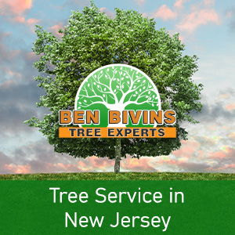

While we primarily provide tree service to Ocean County, Atlantic County, Monmouth County, Camden County and Cumberland County, if you are located anywhere in New Jersey and searching for a local tree company, we want to hear from you!

Some of the areas we provide tree service include:
Ocean County Tree Service and Tree Removal
- Barnegat tree service and tree removal
- Waretown tree service and tree removal
- Forked River tree service and tree removal
- Toms River tree service and tree removal
- Manahawkin tree service and tree removal
- LBI (Long Beach Island) tree service and tree removal
- Bayville tree service and tree removal
- Little Egg Harbor tree service and tree removal
- West Creek tree service and tree removal
- Galloway tree service and tree removal
Don’t see your town listed? No worries! If you are located in New Jersey and seeking out a great tree service company, contact us today!
Ready for your free quote?
When you need prompt, professional service, call Ben Bivins Tree Experts. We go out on a limb for you!
Call 609-698-4992 or send us a message here. If we are busy helping another customer, we’ll be sure to get back to you as soon as possible!